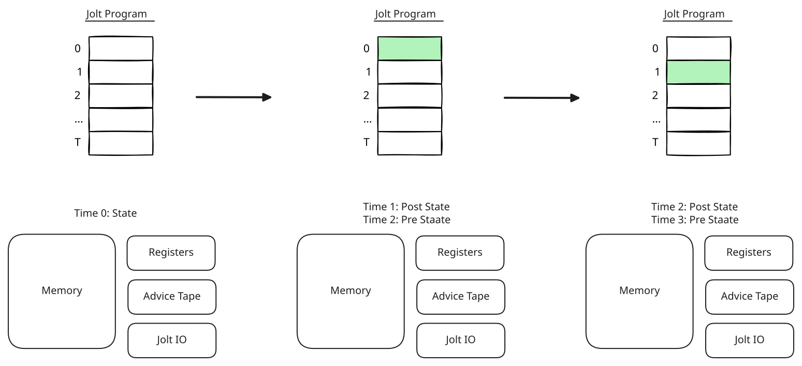
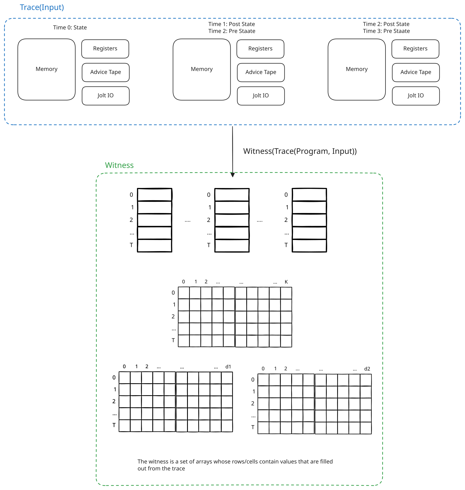
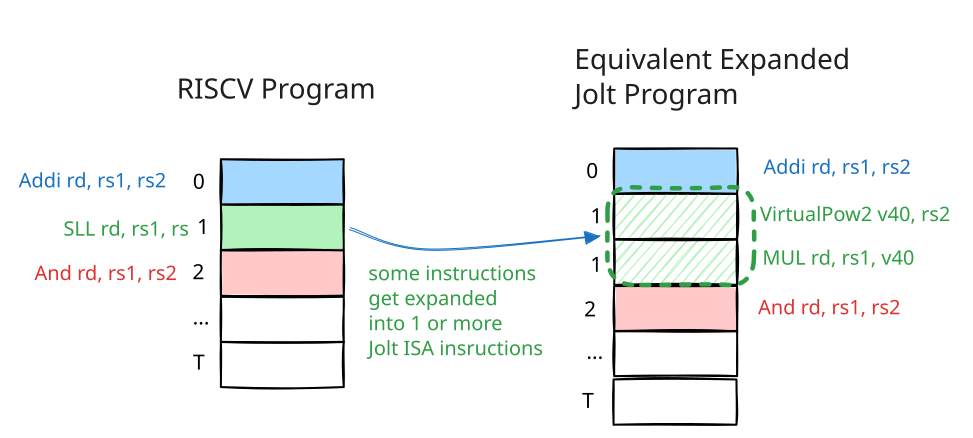

Formally Verifying Jolt
$\newcommand{\trace}[1]{\mathsf{Trace}\left(#1\right)}$ $\newcommand{\witness}[1]{\mathsf{Witness}\left(#1\right)}$ $\newcommand{\expand}[1]{\mathsf{Expand}\left(#1\right)}$ $\newcommand{\witnessFunc}{\mathsf{Witness}}$ $\newcommand{\traceFunc}{\mathsf{Trace}}$ $\newcommand{\Program}{\mathsf{prog}}$ $\newcommand{\Input}{\mathsf{in}}$ $\newcommand{\Output}{\mathsf{out}}$
Today, Jolt consists of hundreds of thousands of lines of Rust code and has evolved into a relatively complex piece of software. Consequently, we now run the risk of encountering difficult-to-detect bugs. As a means towards improving the security guarantees of Jolt, over the last few months we have begun the task of formally verifying the Jolt zk-VM using the Lean proof assistant. Formal verification, in simple words, refers to the act of expressing mathematical claims in a manner such that the veracity of the claim can be automatically checked by a computer. But Jolt is written in Rust and is compiled down to an executable that runs natively on a physical CPU (typically, x86 or ARM). A Lean theorem is a statement written in the Lean programming language, and its proof is a proof term checked by Lean’s kernel. So what does it even mean to formally verify Jolt? In particular, a theorem written in Lean about Jolt could be proved to be true, but one must still demonstrate some connection between the actual Jolt source code and the passing theorem statement for the claim to have any tangible impact on security. In general, claims about formally verifying software are extremely nuanced and often rest on a delicate and volatile set of assumptions.
In this post, we give a brief overview of our methodology and what we mean when we say we have formally verified a component. We describe how the theorem statement is written and what assumptions must hold for the claim to be true. Perhaps the strictest test of our methodology is not whether theorems pass, but whether it finds actual bugs in Jolt. We also outline the limitations in existing methodology and highlight potential blind spots of our modelling choices. Additionally, we chronicle what has been proved and what is currently in progress, and present a road map for the work envisioned to be completed in the near future.
As mentioned above, Jolt has grown in complexity, and thus in order to make well-scoped but measurable progress, we have divided the task of verifying Jolt into 5 phases. The phases are best understood by first reviewing the basics of the Jolt idea.
Jolt: Hundred-Thousand-Foot Overview - Witness Compression#
Jolt is a state-of-the-art zero-knowledge virtual machine (zk-VM) that is intended to power the proving machinery of blockchains. A traditional virtual machine executes a guest program compiled for a specified instruction set architecture (ISA), such as RISC-V, ARM, x86, etc., by emulating the guest CPU in software. A zk-VM is a virtual machine with the added responsibility that it is required to output an efficiently checkable cryptographic proof that it executed every instruction of the guest program correctly.
Thus, Jolt being a zk-VM, can be logically split into two components: the tracer and the prover. The tracer takes a guest program $\Program$ compiled down to RISC-V and possibly some input $\Input$, executes instructions in order, and makes a claim that “Running program $\Program$ on input $\Input$ results in output $\Output$.” As a proof[1], it hands over a witness $w$ to the verifier.
The job of the verifier is to determine if the prover’s claim is true or not.
Therefore, the task is a decision problem. As we will eventually have to write these statements very precisely in Lean, we will re-express the work of a zk-VM in the language of complexity theory[2]. The guest program $\Program$, the input $\Input$, and the claimed output $\Output$ are often referred to as the problem instance $x$, and the honest trace witness $w$ is referred to as the $\NP$ witness[3]. We say $x$ is in the language $L$ if the prover’s claim is true, i.e., if $\Output$ was indeed generated by running $\Program$ on input $\Input$. We will show, using Lean, that the decision problem $L$ is an $\NP$ decision problem.
It may appear that we are being pedantic. Formal for the sake of sounding formal. But the above theorem is perhaps the most important theorem in Jolt, and there currently exists no proof of the above claim. The “if and only if” condition is normally assumed. Showing that the decision problem is in $\NP$ tells us Jolt works as intended. It does not, of course, tell us that proving or verification is practical. That’s what all the cutting-edge papers talk about. How they sped up proving and/or verification. But practicality without correctness will be of no use to us. So we first need to establish that the thing we are proving is sound and complete.
Going back to the story of what Jolt does. The tracer gets the program $\Program$ and some input $\Input$. It runs the program by fetching, decoding and executing instructions to generate a trace $\trace{\Program, \Input}$. The figure below sketches the idea[4], where $\traceFunc$ represents a deterministic computation we will later define.

With the trace in hand, Jolt then computes the witness $w := \witness{\trace{\Program, \Input}}$ as a function of the trace. The mental picture one should have is that the $\witnessFunc{}$ function fills in a bunch of arrays with values based on the trace of the guest program. These values come from an appropriate finite field $\mathbb{F}$.
FIXME: (Ari) Change figure

Now, earlier we argued that $w$ is the proof, and we just described a process by which Jolt can generate such a proof. But $w$ is an $\NP$ proof, and it is no good for practical purposes. Verification requires the verifier to compute $\mathcal{R}(x, w)$, and that task is as expensive as running the program in the first place (as we will later show). The challenge is to generate a substantially cheaper procedure for validating program execution. The Jolt prover’s task, then, can be viewed as compressing the witness $w$ to output a proof $\pi:= \pi(w,x) \in \bit^{*}$ that the verifier can efficiently process to validate whether the program was in fact run correctly. These compressed proofs are often referred to as SNARKs in the literature.
SNARKs stand for succinct arguments of knowledge. The “succinct” models the compression we allude to above. Knowledge is represented by the witness $w$. Arguments of knowledge have a funny definition with respect to extraction and knowledge soundness. We will not worry about that stuff for a while, as it will only distract us from the more important questions. Once we are satisfied that Jolt as an idea works, we will get back to the succinctness and arguments of knowledge business.
So although we just told you that $w$ as a proof is kind of pointless for practical purposes, and Jolt is a practical piece of software, unless we explicitly state otherwise, for a while we will treat the $\NP$ witness as the proof. This will allow us to decompose the task of formally verifying Jolt into manageable chunks of work.
Phase I: Bytecode Expansion#
Ideally, we can immediately show that Jolt is an $\NP$ decision problem, but first we have another hiccup to deal with.
The end goal is efficient proof generation.
The guest program $\Program$ is a sequence of RISC-V instructions.
Foreshadowing into the future, for efficient proof generation, Jolt needs all of these instructions to satisfy some special mathematical properties.
Namely, all instructions must have efficient multilinear evaluations and they must have prefix-suffix structure.
We won’t fret the exact details here, but the interested reader can read the referenced links for what those words mean.
Unfortunately, not all native RISC-V instructions satisfy these nice mathematical properties.
For example, the SLL rd, rs1, rs2 instruction fails to satisfy the prefix-suffix structure needed for Shout (a sub-component of Jolt’s proving machinery).
But the input to Jolt is still a RISC-V program that could contain such instructions, and so it needs some mechanism for efficient proof generation. The approach that the Jolt zk-VM takes is to rewrite the guest RISC-V program into a program in the Jolt ISA, which consists solely of instructions with nice mathematical properties. Thus, Jolt rewrites all troublesome RISC-V instructions that do not have these nice mathematical properties with a sequence of one or more nice Jolt instructions. In order to aid this emulation process, the Jolt CPU includes the usual RISC-V registers plus some additional “virtual” general-purpose registers in which it stores intermediate results.
Continuing with the same example from above, the SLL RISC-V instruction is replaced with the following sequence of Jolt instructions.
VirtualPow2 v1, rs2
MUL rd, rs1, v1Here, VirtualPow2 v1 rs2 is a Jolt ISA instruction that represents a computation which sets the contents of virtual register v1 to $2^{x \bmod 64}$ for RV64, where $x$ represents the contents of register rs2.
As VirtualPow2 is not present in the RISC-V ISA, it is referred to as a virtual instruction.
MUL, on the other hand, is the extension of the RISC-V instruction MUL to the Jolt ISA by allowing it to operate on both RISC-V general-purpose registers and Jolt ISA virtual registers.
The picture now looks like this.

The tracer was given $\Program$ as the program.
But Jolt internally changes the program to $\expand{\Program}$, which involves substituting all non-nice RISC-V instructions with a sequence of nice Jolt instructions.
It then computes the witness $w := \witness{\trace{\expand{\Program}, \Input}}$.
Shown below is a Lean code snippet representing the expanded SLL instruction.
def sllProgramAuto (rd rs1 rs2 : regidx) : Program :=
if isX0 rd then
.instr (JoltISA.Encoded.ADDI (.xreg (regidx.Regidx 0)) (.xreg (regidx.Regidx 0)) (0 : BitVec 12)) <|
.done RETIRE_SUCCESS
else
.instr (.VirtualPow2 (.vreg (BitVec.ofNat 7 40)) (.xreg rs2) (0 : BitVec 64)) <|
.instr (.MUL (.xreg rd) (.xreg rs1) (.vreg (BitVec.ofNat 7 40))) <|
.done RETIRE_SUCCESSBut wait! We have now changed the program.
The witness is a function of a new program $\expand{\Program}$, and the verifier does not care whether we executed every instruction of this modified program correctly.
The verifier wants a proof that you ran $\Program$ correctly.
In this case, it is not too hard to see that the above sequence is equivalent to the original SLL instruction in that the value in rd is the same whether we run one SLL instruction or the expanded sequence.
But in general, we need a way of connecting proofs about $\expand{\Program}$ back to proofs about $\Program$. As RISC-V machine state is a strict subset of the Jolt machine state, we show the following:
Loosely, what these theorems say is that if a witness validates that $\expand{\Program}$ was executed correctly, we can automatically infer $\Program$ was run correctly (assuming certain conditions hold), and the final claim can be reliably trusted by the verifier. Without these proofs, the connection between correct execution of the expanded program and the original program lacks formal justification. This description, of course, only scratches the surface of the work that we have done. How did we translate Rust code to Lean? Where did we get a model of the RISC-V CPU in Lean? Do all theorems pass? Did we find bugs? For the sake of brevity, we leave the technical details out of this post, but we wrote a short paper describing all the details. We did find bugs as well. Then we went ahead and fixed them.
But the big picture so far is that we rewrote a RISC-V program $\Program$ into a program $\expand{\Program}$ in the Jolt ISA. The Jolt tracer speaks Jolt ISA, and can now fetch-decode-execute the expanded program. Because of the theorems above, the verifier can forget that the input was a RISC-V program. All the guarantees will carry over (once all issues described in the paper are resolved).
Phase II: The Jolt Constraints, or the NP Relation#
This phase of the project is currently in progress.
At this point, we can safely assume the verifier’s input program $\Program$ only contains nice instructions written in the Jolt ISA. Now, if we want to show that Jolt is an NP decision problem, we need to first define the $\NP$ relation $\mathcal{R}$.
Without getting bogged down in specific details, one can treat the witness space as a set of empty tables whose cells can hold values from an appropriate finite field $\mathbb{F}$. In Jolt, we define a set of constraints on these values and call them Jolt constraints. Once again, mentally, the picture you have is that a constraint is just a restriction over what values can go in the witness tables. So say the witness was partially made up of tables $A, B$ and $C$ of length $T$. An example of a constraint could look like the following:
$$\forall i \in [T],\quad A[i](B[i] - C[i]) = 0$$
What we are really saying is that a valid witness contains values that satisfy the constraint. Or, in other words, the $\NP$ relation $\mathcal{R}$ is simply the act of satisfying all constraints. Let’s say Jolt has $m$ constraints of the form $C_i(w) = 0$ for $i \in [m]$. Then we are saying:
$$\mathcal{R}(x, w) = 1 \iff \forall\, i\in [m], \, C_i(w) = 0$$
We show the following theorem in Lean (or rather, we are in the process of trying to show this).
Now, once again, we have not answered important questions. How did we get the constraints in Lean from Jolt? For now, we use a combination of human-guided agentic translation of Rust to Lean. Of course, this is not the final artefact, and this is a work in progress. But still, it is easy to turn one’s nose up at such an unsound extraction process. While we do not dispute that one cannot rely solely on agentic translation of Rust code into Lean and that we need better tools, let us justify the value of doing this step. We began this part of the project four weeks ago, and in that time we tried to prove just the completeness theorem. This led to 13 concrete completeness violations in Jolt. The process involved translating small chunks of Rust code to Lean by hand. We asked ChatGPT and Claude to audit the translation. Then, we wrote a theorem about the translated code and attempted to prove it. If we were unable to prove a theorem, we re-examined our translation, looking more deeply for issues. If all looked good, we asked an AI agent to find a counterexample. This rather simplistic approach allowed us to find concrete guest programs that were valid RISC-V programs and for which the Jolt tracer honestly computed witness polynomials, but which the Jolt verifier rejected. The issues can be found here and here. We remark that, during the development of Jolt, it was audited by Fable, ChatGPT Astra and all the leading models multiple times, and none of them surfaced these issues. The Lean source code is publicly available, and is still very much a work in progress.
Fleshed Out Example of a Constraint#
TODO: Will help motivate the sum-check later. Maybe not needed.
Phase III: The Jolt Sum-Checks#
Not yet started
Phase IV: The Sum-Check Reductions#
Not yet started
Phase V: The Commitment Scheme#
Not yet started
-
Here we lie in service of the truth. The proof is not $w$, as we state later in the document. But to begin with, it will be incredibly helpful to just think of $w$ as the proof. ↩
-
Most academic papers do not spell out every detail of this definition of a zk-VM explicitly. We could not find a single precise definition of a zk-VM that everyone agreed upon either. This is likely because it is assumed common knowledge, or perhaps people do not agree on a definition. Either way, as we are formally verifying our claims, we have no choice but to be extremely precise about our definitions. ↩
-
Here run time will be measured in $\poly\left(|x|\right)$. ↩
-
Here, a trace refers to a snapshot of the machine state before each fetch-decode-execute cycle run on the guest program. ↩